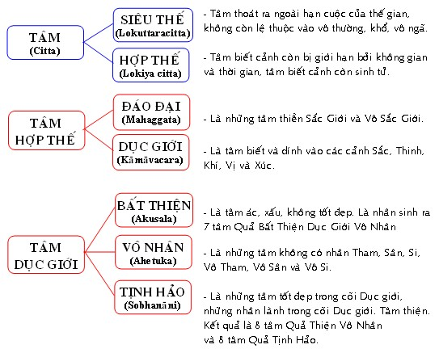

|
PHẬT GIÁO NGUYÊN THỦY THERAVÀDA VI DIỆU PHÁP BAN HOẰNG PHÁP |
|
BuddhaSasana Home Page |
Vietnamese, with Unicode VU Times or CN-Times font |
|
|
PHẬT GIÁO NGUYÊN THỦY THERAVÀDA VI DIỆU PHÁP BAN HOẰNG PHÁP |
|
Xin lưu ý: Cần có phông UnicodeViệt-Phạn VU Times hay CN-Times cài vào máy để đọc các chữ Pàli. |
|
BÀI 4. TÂM Tâm là sự biết cảnh hay nhận thức đối tượng. Ở đây, Tâm phải được hiểu là sự nhận thức thuần túy, chủ trương biết cảnh; còn thể cách thiện hay bất thiện là do các sở hữu tâm. Giải về tâm, các nhà chú giải viết "Cintanaṃattaṃ Cittaṃ = nhận thức gọi là Tâm". "Ārammanaṃ Cinteti Cittaṃ = biết cảnh gọi là Tâm". Theo Vi Diệu Pháp thì các danh từ Tâm (Citta), Ý (Mana), Thức (Viññāṇa) không có sự sai khác về ý nghĩa, tùy theo chỗ dùng mà chúng có nhiều tên gọi khác nhau. Thí dụ: đối với 12 Xứ thì tất cả Tâm gọi là ý (Ý Xứ), đối với ngũ uẩn thì tất cả tâm gọi là thức (Thức Uẩn) ... Atthakathā chú giải rằng: Trạng thái (chơn tướng) của Tâm là biết cảnh (Ārammanaṃ Vijāranakkhanaṃ). Phận sự của Tâm là chủ trì, hướng dẩn sở hữu tâm (Pubbaṃgamarasaṃ). Sự thành tựu của Tâm là tư cách liên tục, nối nhau sanh diệt không gián đoạn (Sandhanapaccupaṭṭhānaṃ). Nhân cần thiết của Tâm là Sở hữu tâm và Sắc pháp (Nāma Rūpa padaṭṭhanaṃ). Có bốn nhân sanh tâm: 1. Nghiệp quá khứ (Atītakamma) là những hành động thiện hay bất thiện trong quá khứ tạo ra quả hiện tại. Thành phần chính phải nói là tâm quả. Như một người làm các ác nghiệp, khi chết phát sanh tâm quả dẩn đi tục sinh vào kiếp ác thú. 2. Sở hữu tâm (Cetasika) là những thành phần phụ thuộc của tâm. Ðồng sanh, đồng diệt với tâm, đồng nương một căn với tâm, đồng biết một cảnh với tâm. Không thể có một tâm nào mà không có sở hữu tâm. Khi nhìn lên bảng, ta biết ngay đó là tấm bảng, thì tâm biết đó phải có sở hữu Tưởng (nhớ lại cái đã gặp để ghi nhận cảnh hiện tại) hay phải có sự hướng tâm đến cảnh (sở hữu Tầm) hoặc trụ tâm trên cảnh (sở hữu Ðịnh) ... Như vậy tâm không phải là một đơn vị thuần nhất mà là một tập hợp của nhiều thứ. Cũng như phim không thể chụp hình, mà đòi hỏi phải có máy chụp hình gồm ống kính, bộ phận ánh sáng ... thì phim mới ghi nhận cảnh được. Do đó, có thể nói sở hữu tâm là nhân sanh tâm hay yếu tố sanh tâm. 3. Cảnh (Ārammanaṃ) là đối tượng của tâm, tâm biết cảnh, những gì bị tâm biết gọi là cảnh. Nếu không có cảnh thì không có tâm, có tâm là có cảnh. Do đó, gọi cảnh là nhân sinh tâm. 4. Vật (Vatthu) là những Sắc Thần Kinh (Pasādarūpa), chỗ nương của tâm thức. Như con mắt là chỗ nương của nhãn thức, tai là chỗ nương của nhĩ thức .... Do đó, gọi vật là nhân sanh tâm. Theo Abhidhamma có tất cả là 89 tâm (hay 121 tâm nếu tính theo chi thiền) được phân loại tùy theo phương diện. * Nếu chia theo lãnh vực (Vacara) thì tâm có 4 loại: 1. Tâm Dục Giới (Kāma vacaracitta): là tâm phần lớn bắt cảnh dục (Sắc, Thinh, Khí, Vị, Xúc). Thuộc về lãnh vực Dục Giới gồm có 54 tâm. 2. Tâm Sắc Giới (Rūpa vacaracitta): là tâm Thiền, lấy sắc pháp làm đề mục tu thiền. Gồm có 15 tâm. 3. Tâm Vô Sắc Giới (Arūpa vacaracitta): là tâm Thiền, lấy đề mục không sắc pháp làm đối tượng tu thiền. Gồm có 12 tâm 4. Tâm Siêu Thế (Lokuttaracitta): là tâm biết cảnh Niết Bàn; đối tượng thoát ly thế gian, không thuộc về thế gian. Có tất cả là 8 tâm (hay 40 tâm nếu tính theo 5 chi thiền). * Nếu phân tâm theo cảnh thì tâm gồm có 6 loại: 1. Tâm Nhãn Thức (Cakkhuviññāṇa): là tâm nương nhãn vật, biết cảnh sắc, hình ảnh. Gồm có 2 tâm. 2. Tâm Nhĩ Thức (Sotaviññāṇa): là tâm nương nhĩ vật, biết cảnh thinh. Có tất cả là 2 tâm nhĩ thức. 3. Tâm Tỷ Thức (Ghānaviññāṇa): là tâm nương tỷ vật, biết cảnh khí (các mùi). Gồm có 2 tâm. 4. Tâm Thiệt Thức (Jivhāviññāṇa): là tâm nương thiệt vật, nhận biết cảnh vị (các vị cay, chua, mặn,...). Gồm có 2 tâm. 5. Tâm Thân Thức (Kāyaviññāṇa): là tâm nương thân vật, nhận thức cảnh xúc (sự va chạm, nóng, lạnh, ...). Gồm có 2 tâm. 6. Tâm Ý Thức (Mana viññāṇa): là tâm bắt cảnh pháp, là cảnh trạng khởi lên trong tâm. Có tất cả 111 tâm (trừ ngũ song thức).  -ooOoo-
Ðầu trang |
Mục lục
| 01
| 02
| 03
| 04
| 05
| 06
| 07
| 08
| 09 |
Chân thành cám ơn Bác sĩ Nguyễn Tối Thiện đã gửi tặng bản vi tính (Bình Anson, 10-2002).
[Trở
về trang Thư Mục]
updated: 24-08-2003